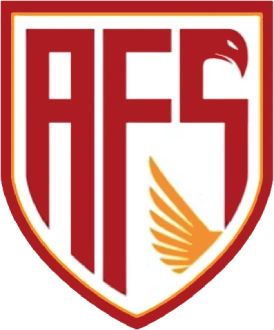
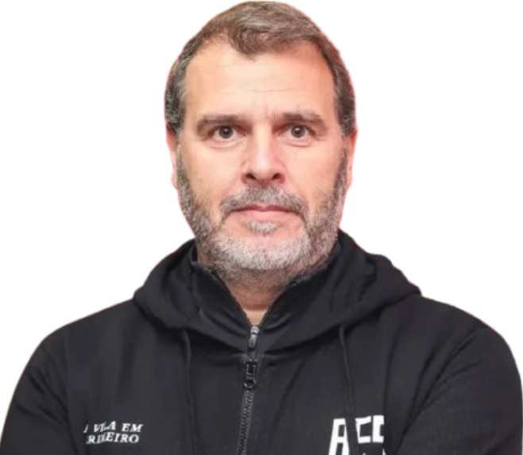
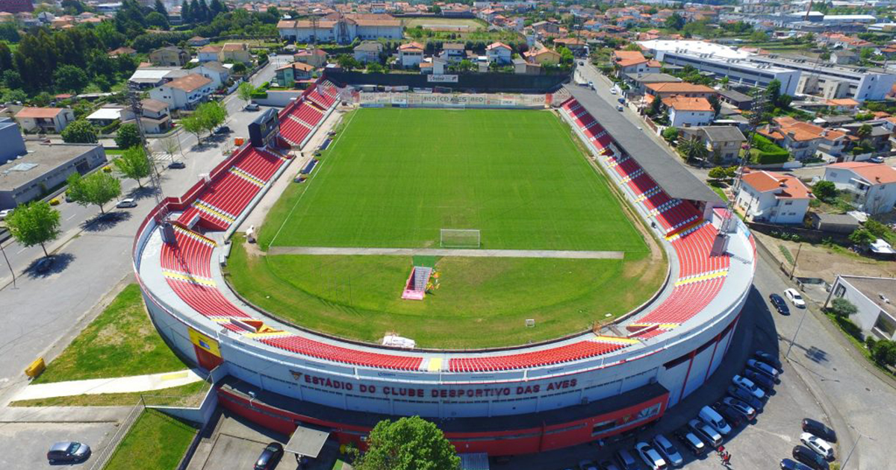

Treinador: João Henriques
A carreira de João Henriques conheceu o seu auge em Portugal ao serviço do Santa Clara, onde alcançou um histórico 10.º lugar na Primeira Liga com 42 pontos.

Estádio: Clube Desportivo das Aves
Inaugurado oficialmente em dezembro de 1981, o Estádio do Clube Desportivo das Aves tornou-se o centro da paixão futebolística da vila, vivendo o seu auge com a conquista da Taça de Portugal em 2018. Após enfrentar o risco de abandono devido à crise financeira de 2020, o recinto foi revitalizado pelo AFS.

Estilo de Jogo:
João Henriques tem implementado uma filosofia no AFS que se foca primariamente na organização defensiva e na solidez da equipa para lutar pela permanência na primeira liga portuguesa.
"A Vila Em Primeiro!"